My Research
Welcome to the Research section of my website. Here you will find information about my research in Lattice QCD, publications, talks, and earlier projects.
Looking for Master's & earlier reading projects? Earlier Projects ↓
Lattice QCD and Hadron Spectroscopy
I am currently engaged in research in the field of Lattice Quantum Chromodynamics (Lattice QCD), a powerful approach to studying the strong interaction, which is a fundamental force in the Standard Model of particle physics with Dr. M. Padmanath.
Exotic Hadrons
Within the realm of Lattice QCD, my specific focus is on Hadron Spectroscopy. In simple terms, hadrons are composite particles made up of quarks and gluons. I am particularly intrigued by exotic hadrons, which are unique particles that do not fit into the traditional quark model. These particles provide valuable insights into the behavior of the strong force under extreme conditions.
Investigating Tetraquarks
One of the primary goals of my current research is to explore the properties of tetraquarks. Tetraquarks are exotic hadrons composed of four quarks, including two quarks and two antiquarks. By conducting numerical simulations using Lattice QCD techniques, I aim to determine the masses of tetraquark states and gain a deeper understanding of their nature and behavior. I am working as a doctoal student at the hadron spectroscopy group of The Institute of Mathematical Science.
A brief summary of our work was also featured in the IMSc Newsletter .
Lattice QCD Simulation
To perform large-scale numerical studies of hadronic systems, I make extensive use of public Lattice QCD software frameworks including openQCD, MILC, Chroma, and GPT. These tools are used for generating gauge configurations, constructing correlation functions, and performing spectroscopy analyses. My work leverages these packages to probe the structure and dynamics of exotic hadrons, with a focus on high-precision simulations using efficient algorithms on HPC clusters.
Seminar Talks
Poster Talks
Research Papers
Proceedings
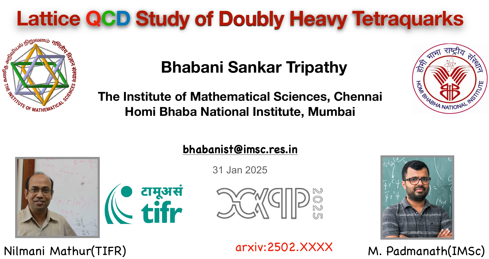
“Study of doubly heavy tetraquarks” – CAPPS, 2025
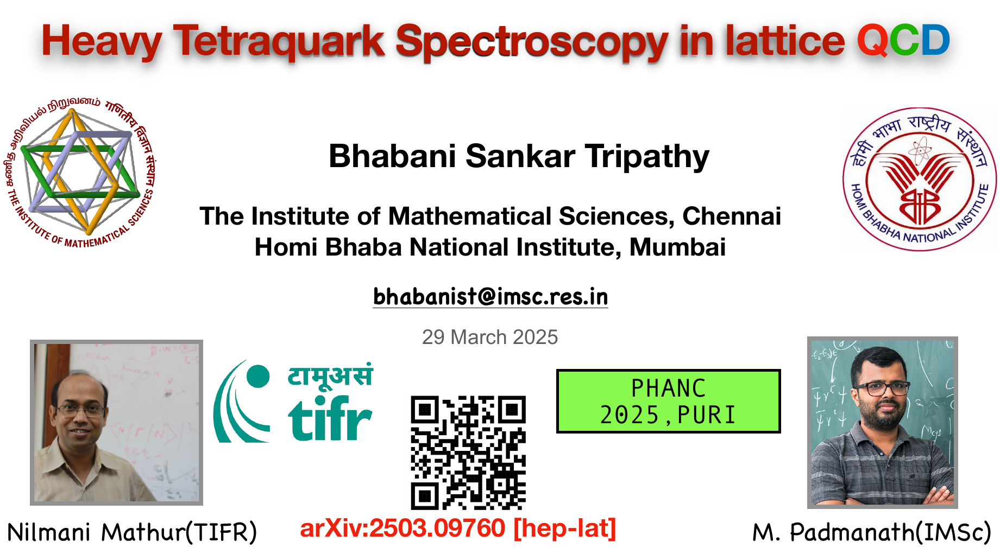
“Heavy tetraquark structures in Lattice QCD” – PHANC, 2025
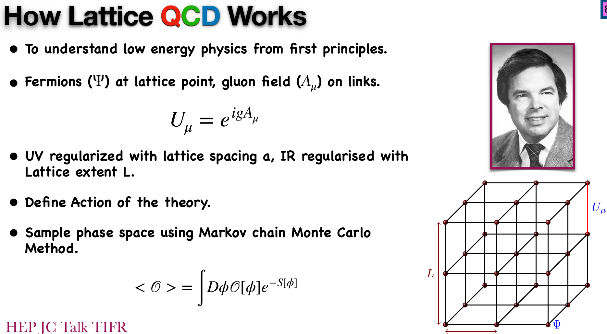
“Lattice QCD study of exotic hadrons” – TIFR Talk, 2025
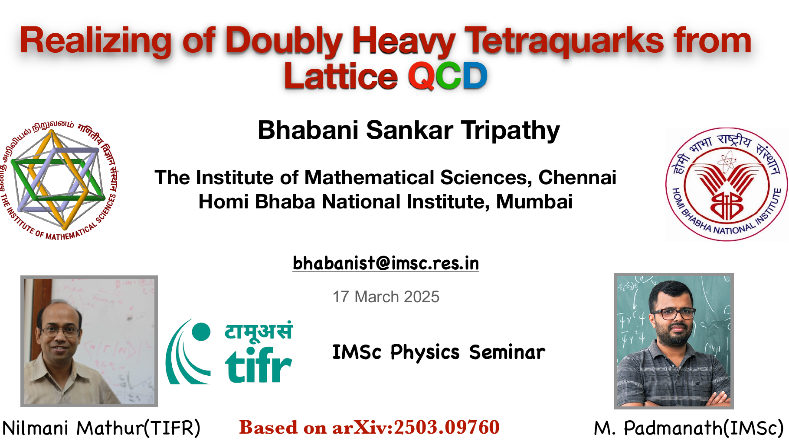
“Tetraquarks with bottom quarks in lattice QCD” – IMSc Physics Seminar, 2025
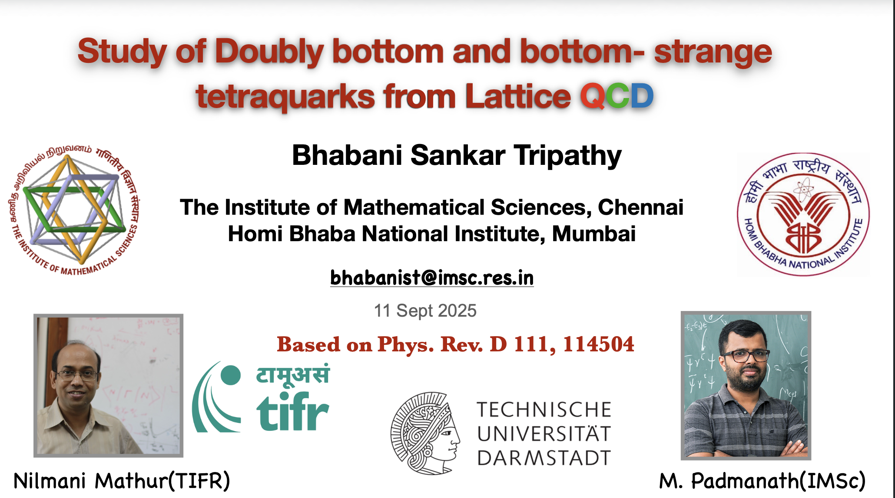
“Study of Doubly bottom and bottom-strange tetraquarks from lattice QCD” – TU Darmstadt, Germany, 2025
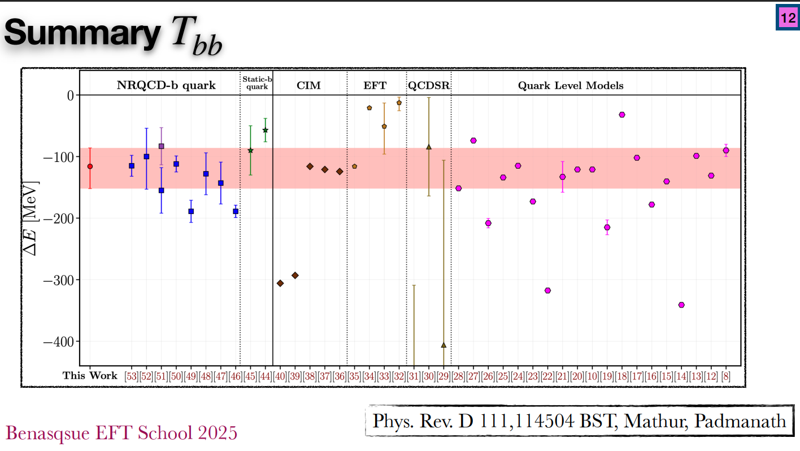
“Heavy Tetraquark Hadron Spectroscopy using Lattice QCD” – Centro de Ciencias de Benasque, Spain, 2025
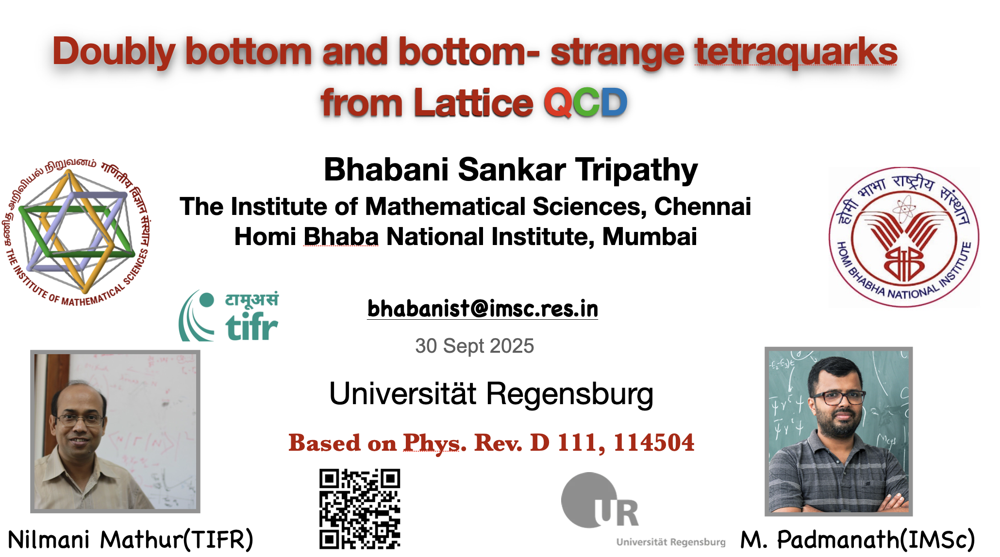
“Doubly bottom and bottom-strange tetraquarks from lattice QCD” – University of Regensburg, Germany, 2025
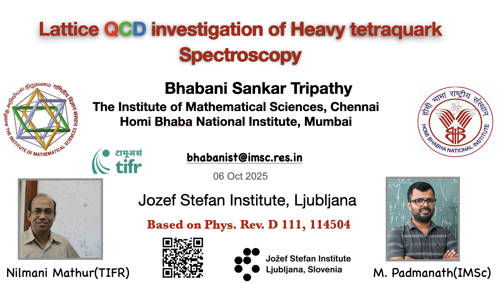
“Lattice QCD investigation of Heavy Tetraquark Spectroscopy” – Jozef Stefan Institute, Ljubljana, 2025
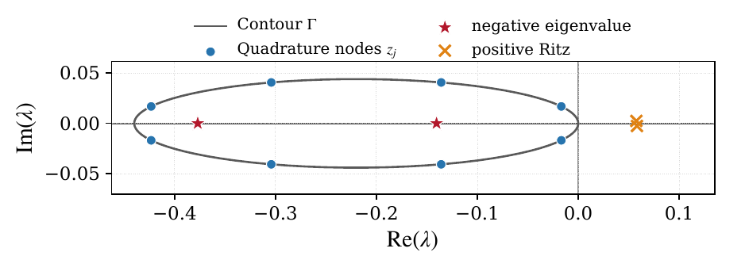
“Sign of Wilson-Fermion Determinant using Contour-Integral Spectral Projection”
arXiv:2609.28646 [hep-lat], 2026
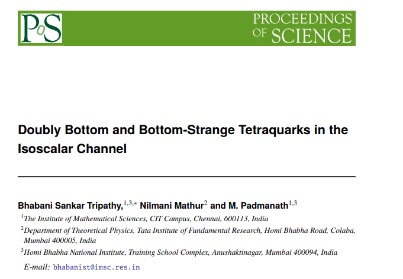
“Doubly Bottom and Bottom-Strange Tetraquarks in the Isoscalar Channel” – PoS(LATTICE2025) 063
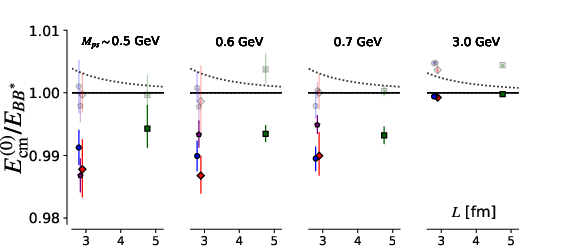
“Doubly Bottom Tetraquarks from a Lattice QCD Perspective” – XXVI DAE-BRNS HEP Symposium, 2024
Earlier Projects
Selected reading and research projects from my Master's studies.
Study of Strongly Interacting System
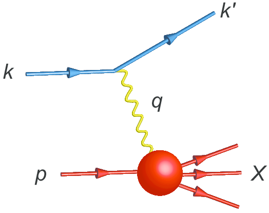
This was a reading project which I did under Prof. Sanjay Kumar Ghosh. Here I investigated the structure of the proton with the help of Deep-Inelastic Scattering.
Comparison between Monte Carlo and Mean-fields Results in Ising Model for Finite External Field
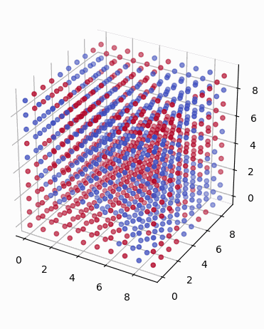
This was a very interesting project about the phase transition which I did under Prof. Sanatan Digal. Here I compared thermodynamic observables like magnetization and the corresponding fluctuation between Monte Carlo results and mean field theory (Bragg-Williams and Bethe approximations) with a uniform external magnetic field.